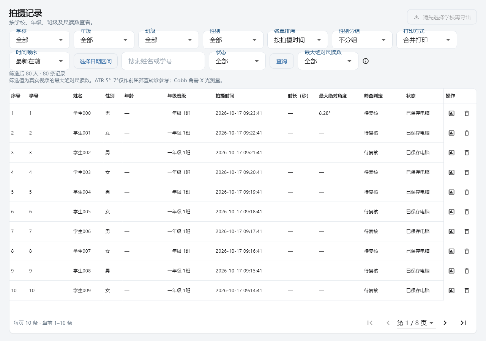

指定 Excel（已修复） 3.3.23 安装包
显示校正、全局日志与指定 Excel 修复（3.3.23）
用户确认：只导出显示数据（平滑后 +1°），原始数据留在数据库。
- 原始模型输出不改，方案 A 插补/180 ms 平滑后加 1°；版本 ruler-beautify-A-v2-offset1。历史显示缓存按原始数据重建，读取/重启/导出不重复叠加。校正后超过 ±10° 留空，边界仅容忍 1e-12° 浮点舍入误差。
- 记录列表移除“有效率”整列及对应宽度、行单元格；诊断和 Excel 原有质量信息保留。
- 设置新增“日志 → 导出日志”。运行、通信、错误及分析摘要复用全局 business_logs；记录工作空间、拍摄 ID、版本、视频校验值、耗时、点数及拒读原因。切换空间后继续保存；导出 ZIP 不包含名单数据库、照片或录像。旧工作空间的历史日志不自动迁移。
- 指定向阳实验中学工作簿原先 633 个点本来就是旧版方案 A 的显示数据，未应用 +1°。本次依据数据库只读快照重新生成 8 次拍摄的显示数据，修复汇总、633 个绘图点、8 张图表缓存/峰值标记及版本说明。原文件已更新，旁边保留“修复前备份”和“显示数据修复”副本。
验证
- Flutter 全量 174 项通过。另 4 项日志定向覆盖成功/失败分析、跨空间及重启、ZIP 内容、导出取消/失败及记录表列对齐。
- 最终边界与 10 段已保存原始数据回放 1,413 点通过；未重新抽帧/识别，不能称为新的 10 视频原生算法重测。
- 指定 Excel 全部 XML 可解析，633 点图表缓存与隐藏单元格逐点一致；14 个必要部件更新，35 个其他部件字节不变。版式、绘图锚点、样式、打印和男女分表设置保留。原始角度表 SHA256 前后相同。
- Dart 静态分析无问题，打包工具 4 项测试通过。窗口关闭测试改为等待异步日志排空，不用固定 100 ms 假定关闭完成。
- 源码提交：812cfe2da5ce459528cf92937e2e9aacc2530e1c。C DLL 和模型二进制未改，不修改或烧录开发板。
- 没有新增精度真值；+1° 是用户要求的显示校正，不能据此宣称模型精度提升。安装及新版真实窗口操作、干净电脑测试未在本轮重复。
日志入口见“设置_日志.png”，记录表见“记录_移除有效率.png”。校验与指定工作簿路径见 verification.json、workbook-repair.json。安装包和完整 ZIP 在 Flutter releases/windows-3.3.23-812cfe2，沿用旧完整版本可回滚；回滚处理缓存仍从原始数据生成。
Windows Release 构建成功，完整 ZIP 的 45 个运行文件回读一致；安装包与 ZIP 校验值见 release-SHA256SUMS。安装包已生成，当前旧程序未安装替换。
以下为隔离环境中的控件测试截图，正式全局目录以设置页显示为准；未冒充已安装版本的人工验收。
